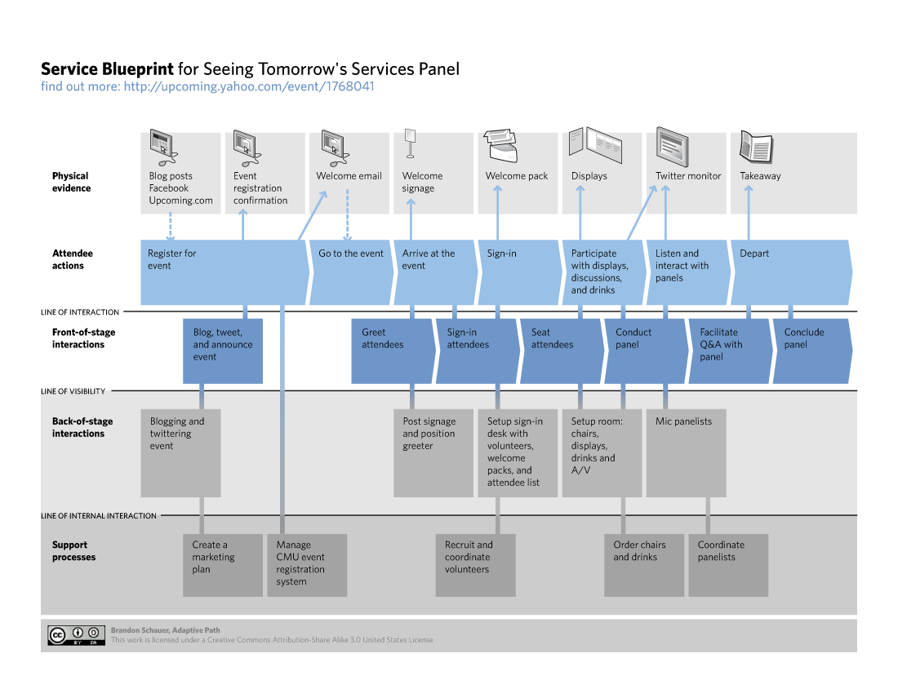
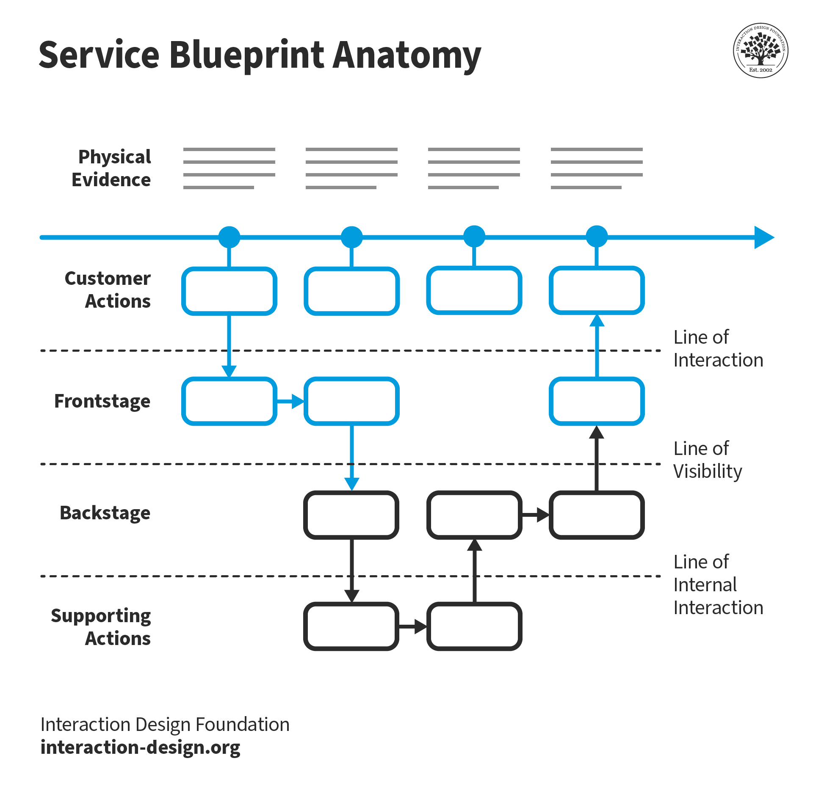
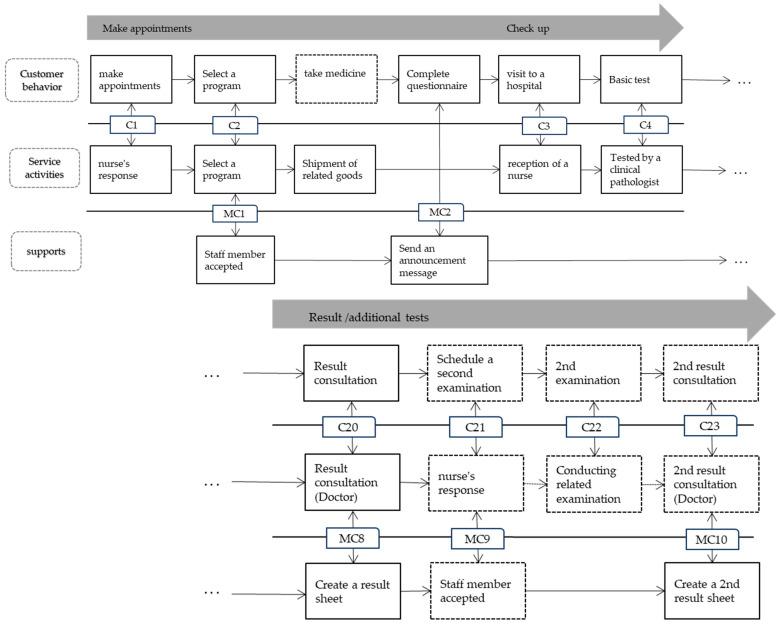
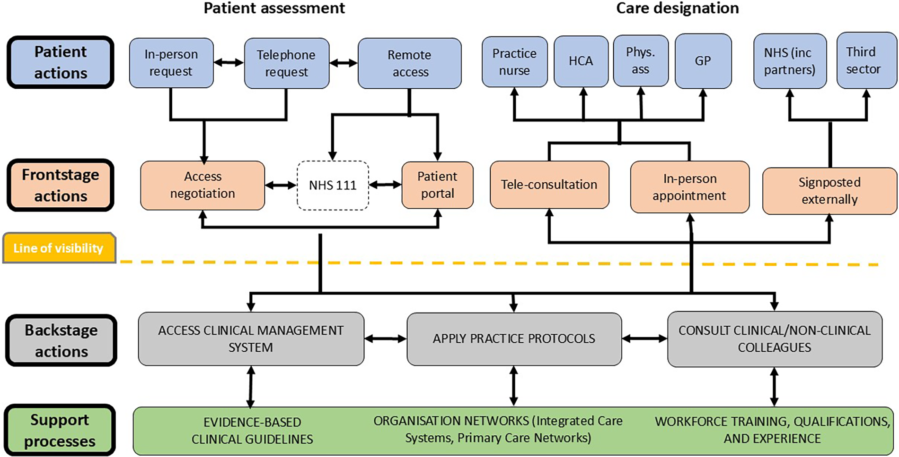

Service blueprint
About
A service blueprint extends the user journey map by adding layers that reveal the operational infrastructure behind the experience. Where a journey map shows what the user sees, a service blueprint shows what makes that experience possible: frontstage actions (what happens in view of the user), backstage actions (what happens out of view), support processes (systems, tools, and teams that enable backstage actions), and physical or digital evidence (what the user actually interacts with). The blueprint makes the invisible visible — allowing teams to identify operational failures, duplicate efforts, and gaps between the experience that was designed and the one that gets delivered.
When to use
Use a service blueprint when working on omnichannel services, multi-department organizational contexts, or any service where the gap between user experience and operational reality is significant. It is the natural second step after a journey map has established the user perspective.
When not to use
Do not create a service blueprint without first having a journey map — the user layer must be grounded in research before adding operational complexity. Also avoid blueprinting the entire service in one diagram; scope to a specific scenario and a specific customer journey.
References
Examples
Click any example to view full size and visit the original source.




